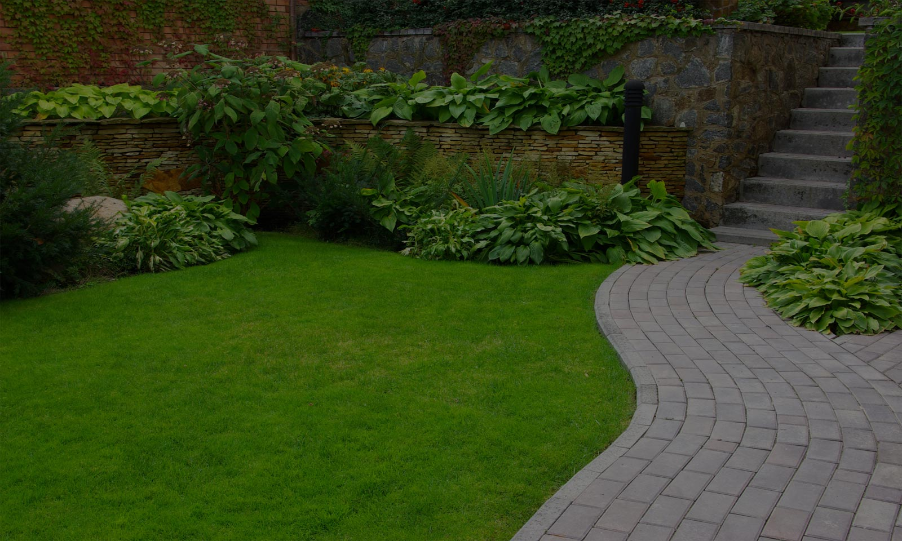
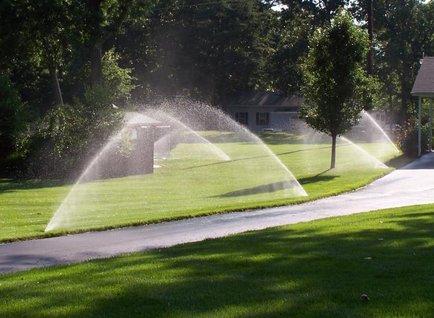
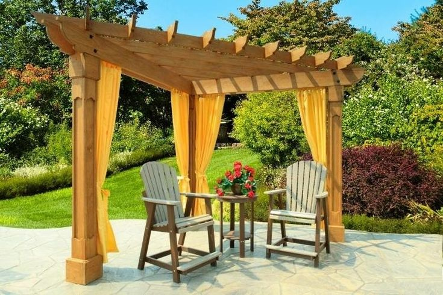

Eco Tree


Flores para el jardín lunar
Si quieres armar un bello jardín lunar en tu hogar no pueden faltarte estas hermosas plantas Mas...

Plantas resistentes al frio
Listado de plantas con flores que resisten las heladas, son decorativas y muy hermosas. Mas...
Jazmin: cuidado y propiedades
La Flor del Jazmin, es conocida por su intenso perfume, que desprende un dulce e intenso aroma..Mas...
Jardines y caminos
Diseñamos el paisaje de patios y jardines pequeños potenciando al maximo los espacios, sus alturas, aportando una nueva mirada para asi a los aspectos de estos particulares lugares con diferentes materiales. Diseñamos caminos en piedra lajas, madera; combinando materiales y alturas en jardines y parques de variadas magnitudes.
Instalacion de Riegos
El riego por aspersion o tambien llamado riego automatico, es una tecnica muy productiva sobre todo para el riego de espacios verdes muy ampliosy huertas extensas.Es importante tener en cuenta algunos consejos parala tecnologia que se aplica a este riego sea provechosa y no se convierta en un inconveniente.
Decoración

Con la llegada del buen tiempo los que disponen de jardin o con un gran patio trasero pasan mucho mas tiempo en el como es normal. Disfrutando del aire fresco, dandose un agradable baño caliente , cenando con la familia, durmiendo la siesta, al momento de decorar un parque se deben tener en cuenta muchos aspectos
Hamacas y Pergolas
Para decorar y diseñar un jardin no solo se tiene en cuenta las plantas y los colores. En los ultimos años se convirtieron en tendencia las hamacas,que dan un ambiente jovial y fresco, los estanques , las luces de colores y bien armoniosas son y mucho mas, Actualmente, quienes ambientan su espaciosexterior suelen instalar fogoneros, algo que es fundamental para que el jardin quede completo y asi poder disfrutarlo de noche, tanto los adultos como los adolecentes de la casa
Ideas..
fundamental para que el jardin quede completo y asi poder disfrutarlo de noche, tanto los adultos como los adolecentes de la casa